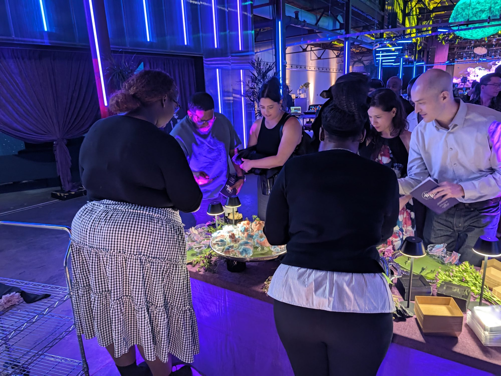
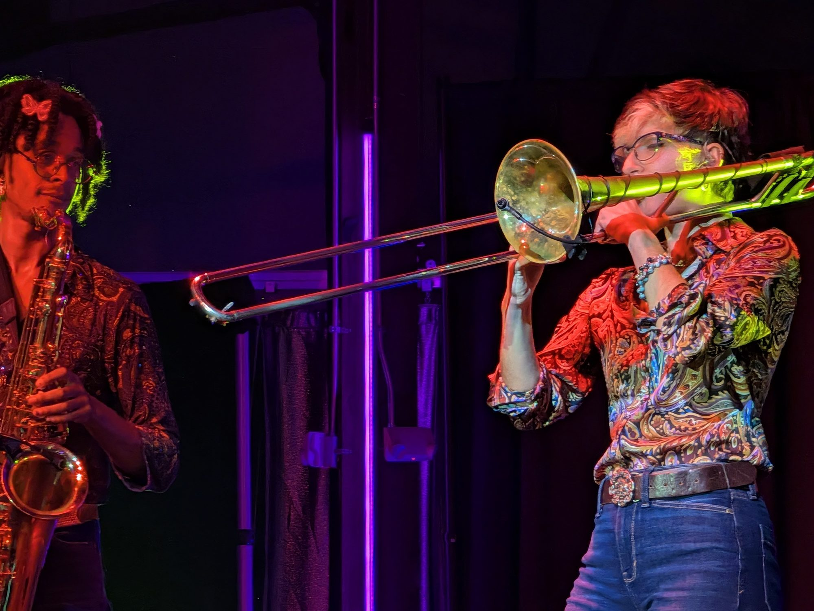
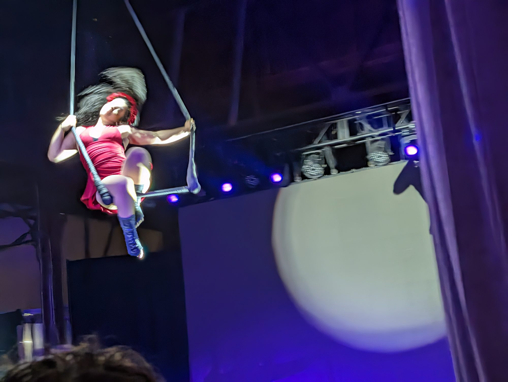
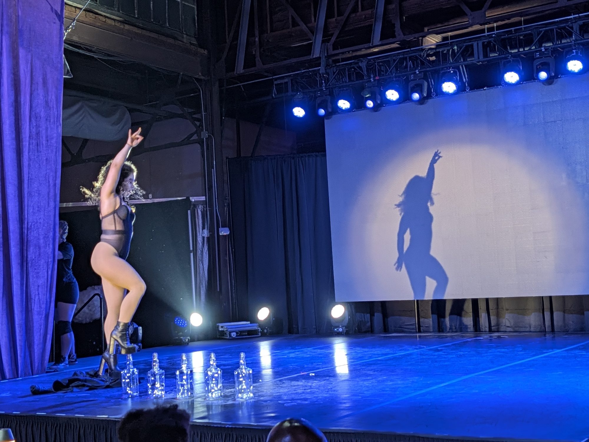
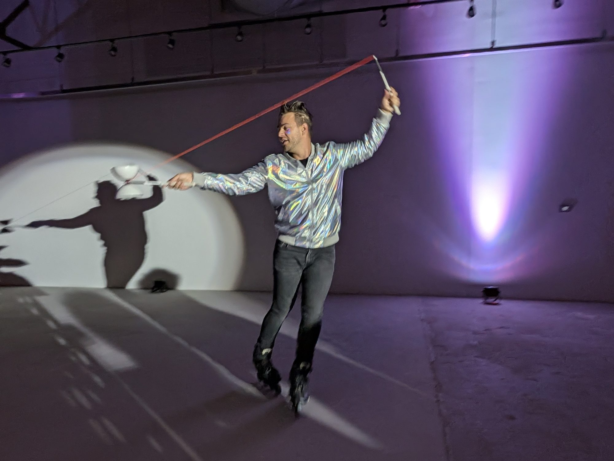
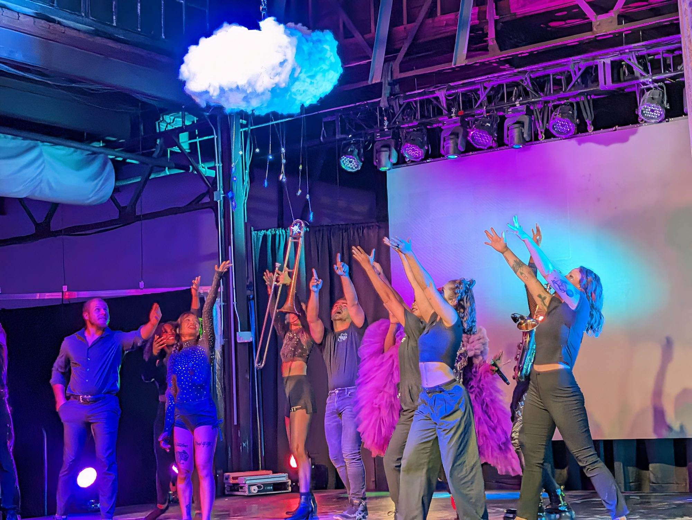

Immersive & Production / Case Study
Bèl Rèv ATL
Atlanta’s dreamy circus dinner theatre — Bèl Rèv is “Beautiful Dream” in Haitian Creole. Guests don’t simply watch the story; they enter it. My job: blur the edges of reality while helping make sure the dream comes true.
01 — The dream
Bèl Rèv is a new kind of night out: boundary-pushing circus arts, seasonal cuisine, live music, and layered storytelling woven into one evening where reality politely loosens its grip.
It’s an ambitious, multidisciplinary production built to give professional circus artists a sustainable home in Atlanta. I work across both sides of it — the immersive details guests fall into, and the operational machinery that keeps a dinner service and an aerial act on the same clock.

02 — What I owned
The seams of the dream
- 1Volunteers. Recruited, trained & managed the event-night volunteer team — the people who make a guest’s first five minutes feel like part of the show.
- 2Seating & guest flow. Planned the seating, spatial arrangements, and movement through the space — sightlines for the circus, logistics for the dinner.
- 3The seating/meal system. Designed the system connecting each seat to its courses and coordinated food service — so every table ate on cue, between acts, without a single spotlight on a serving tray.
- 4Ops documentation. Produced the operational docs and instructions that let everyone else do their jobs without asking twice.
- 5Night-of everything. Setup, resets, strike, and the onsite problems that don’t RSVP.
- 6Marketing & immersive elements. Created graphics, marketing pieces, and in-world touches that carry the dream from the first scroll to the final bow.

03 — The guest journey
Doors to bow, without breaking the spell
A dinner theatre guest journey is a duet between two schedules: the kitchen’s and the show’s. Every transition — arrival, seating, courses, acts, intermission, finale — is a handoff where the dream can wobble. We designed those handoffs so the guest only ever feels the story: dinner timed to aerialists, resets hidden in applause.





04 — Reflection
Bèl Rèv is the fullest overlap of what I do: worldbuilding that guests can taste, and operations invisible enough to protect the magic. If the dream looks effortless, the documentation worked.